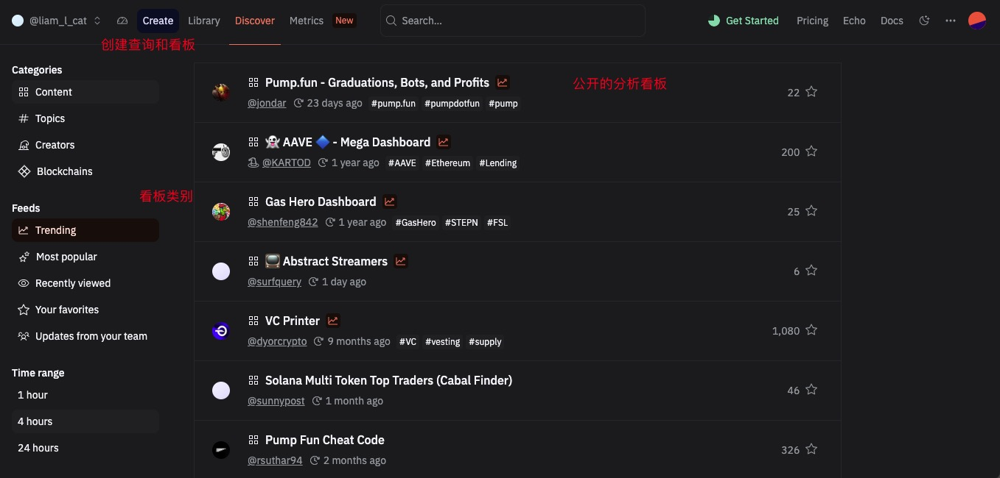

Chapter 2 Dune 简介
区块链数据产品大致可以分为 数据源、数据开发工具和数据应用（数据 App） 三大类。直接接入原始数据源的成本高昂，难度极大，往往需要部署节点、解析链上数据、处理海量非结构化信息，这对普通用户来说门槛过高。而数据 App（如 Nansen、Glassnode 等）虽然提供了现成的分析和可视化功能，但往往是固定模板，难以满足个性化需求。因此，如果我们希望灵活地分析链上数据，又不想投入过多开发工作量，就需要一个能够高效获取链上数据，同时具备分析能力的工具。在这一类 数据开发工具 中，Dune 是最便捷且强大的选择。
Dune Analytics 是一个专为链上数据分析打造的平台，允许用户直接在其 SQL 查询引擎上编写代码，从 Dune 解析的区块链数据库中提取所需数据，并进一步生成可视化图表，最终汇总成数据仪表盘（Dashboard）。Dune 的优势在于：它提供了结构化的链上数据，简化了数据获取的复杂度，让用户无需运行节点或自行解析链上交易，同时具备极高的自定义能力，适用于 DeFi、NFT、DAO 等多个 Web3 领域的分析需求。因此，对于希望在链上数据中挖掘价值的人而言，掌握 Dune 既能降低技术门槛，又能极大提升数据分析的效率。

总而言之, Dune 帮助数据分析/数据科学人员完成了链上数据的抽取, 转换等步骤, 提供了可直接使用的数据表.让分析者可以直接通过SQL操作分析数据集.
2.1 Dune 核心功能
2.1.1 Query 查询
- 在Dune 中打开编辑窗口
2. 编写SQL代码
这个代码用于分析以太坊日常活动
SELECT
--truncate time to day
date_trunc('day', block_time) AS time,
-- count distinct addresses that signed a transactions
COUNT(distinct "from") AS active_users,
-- count distinct addresses that received a transaction
COUNT(distinct "to") AS receiving_addresses
FROM ethereum.transactions
WHERE block_time > DATE '2023-01-01'
GROUP BY 1运行并且保存
在query中还可以设置一个可变的输入参数，改变查询条件，比如可以设置不同的用户地址，或者设置不同的时间范围，参数设置是以’{{参数名称}}’形式嵌入到查询语句中的。
2.2 Dune 看板案例
在开始创建看板之前，我们需要掌握一些基础背景知识。Uniswap 是当前最流行的 去中心化金融（DeFi）协议 之一，它由一组持久且不可升级的智能合约构成，共同实现了一种自动做市商（AMM）机制。Uniswap 主要用于 以太坊（Ethereum）区块链上的 ERC20 代币交换，允许用户无需中心化中介即可进行点对点交易。
Uniswap 的核心运作方式如下：工厂合约（Factory） 负责部署新的 流动资金池（Pool），每个资金池由两种 ERC20 代币组成，并设定不同的交易费率（fee）。流动性（Liquidity） 是指存储在资金池合约中的资产，交易者可以利用这些资产进行代币交换。流动性提供者（Liquidity Provider，LP） 是那些将自己持有的 ERC20 代币存入资金池的用户，他们通过提供流动性赚取交易手续费作为补偿，同时也需承担因价格波动带来的无常损失（Impermanent Loss） 风险。而普通用户（Swapper）则可以在资金池中自由交换代币，并支付一定的服务费。例如，在 USDC-WETH 交易池（费率 0.30%）中，你可以用 USDC 兑换 WETH，或将 WETH 兑换回 USDC，仅需支付少量交易费用即可完成兑换。
Uniswap V3 的核心运作流程可以概括如下：
1️⃣ 工厂合约 负责创建流动资金池（每个资金池包含两种 ERC20 代币）。
2️⃣ 流动性提供者（LP） 添加代币资产到流动资金池，并获得未来的交易手续费奖励。
3️⃣ 交易者（Swapper） 在资金池中兑换自己持有的代币，并支付一定的服务费。
4️⃣ 流动性提供者（LP） 按比例获得交易手续费收益，同时需承担价格波动的风险。
对于初学者而言，DeFi 领域的某些概念可能听起来较为复杂，但无需担心, 在本书中，我们不会深入探讨 Uniswap 及 DeFi 机制的技术细节，而是希望通过 实际案例 让你直观理解 链上数据分析到底分析什么。
在即将创建的数据看板中，我们将围绕 Uniswap V3 的流动资金池 展开分析，主要涉及的数据表是 uniswap_v3_ethereum.Factory_evt_PoolCreated，同时部分查询会用到 tokens.erc20 表。在正式开始之前，你只需了解以下几个关键点即可：
✅ Uniswap 允许创建多个不同的 流动资金池（Pool），每个池子包含两种 ERC20 代币，形成一个 代币对（Pair）。
✅ 相同的代币对（如 USDC-WETH） 可以在不同的 交易费率 下创建多个资金池（如 0.05%、0.30%、1%）。
✅ 资金池的流动性、交易量、手续费分配等数据都可以通过链上数据查询获得，并用于分析 DeFi 生态的运行情况。
2.2.1 Dune 中 Uniswap流动资金池表
流动资金池表, uniswap_v3_ethereum.Factory_evt_PoolCreated的结构如下 :
在这个看板中, 主要内容包括 :
- 查询流动资金池总数
- 不同费率的流动资金池数量
- 按周汇总的新建流动资金池总数
- 最近30天的每日新建流动资金池总数
- 按周汇总的新建流动资金池总数-按费率分组
- 统计资金池数量最多的代币Token
- 最新的100个流动资金池记录
2.2.1.1 查询流动资金池总数
通过使用汇总函数Count()，我们可以统计当前已创建的全部资金池的数量。
select count(*) as pool_count
from uniswap_v3_ethereum.Factory_evt_PoolCreated创建一个查询, 然后保存这个查询. 然后创建一个count
接着创建一个Dashboard , 并且添加我们创建好的count.
接下来, 我们继续添加Query .
2.2.1.2 不同费率的流动资金池数量
费率“fee”是数值形式，代表百万分之N的收费费率。比如，3000，代表3000/1000000，即“0.30%”。用fee的值除以10000 （1e4）即可得到用百分比表示的费率。 将数值转换为百分比表示的费率更加直观。我们可以使用修改上面的查询来做到这一点：
select concat(format('%,.2f', fee / 1e4), '%') as fee_tier,
count(*) as pool_count
from uniswap_v3_ethereum.Factory_evt_PoolCreated
group by 1其中，concat(format(‘%,.2f’, fee / 1e4), ‘%’) as fee_tier部分的作用是将费率转换为百分比表示的值，再连接上“%”符号，使用别名fee_tier输出。
2.2.1.3 按周汇总的新建流动资金池总数
要实现汇总每周新建的流动资金池数量的统计，我们可以先在一个子查询中使用date_trunc()函数将资金池的创建日期转换为每周的开始日期（星期一），然后再用Group By进行汇总统计。
select block_date, count(pool) as pool_count
from (
select date_trunc('week', evt_block_time) as block_date,
evt_tx_hash,
pool
from uniswap_v3_ethereum.Factory_evt_PoolCreated
)
group by 1
order by 1按时间统计的数据，适合用条形图、面积图、折线图等形式来进行可视化，
2.2.1.4 最近30天的每日新建流动资金池总数
要实现汇总每天新建的流动资金池数量的统计，我们可以先在一个子查询中使用date_trunc()函数将资金池的创建日期转换为天（不含时分秒值），然后再用Group By进行汇总统计。这里我们使用公共表表达式（CTE）的方式来查询。与使用子查询相比，CTE能让查询逻辑更加直观易懂、定义后可以多次重用以提升效率、也更方便调试。后续的查询都会倾向于使用CTE方式。
with pool_details as (
select date_trunc('day', evt_block_time) as block_date, evt_tx_hash, pool
from uniswap_v3_ethereum.Factory_evt_PoolCreated
where evt_block_time >= now() - interval '29' day
)
select block_date, count(pool) as pool_count
from pool_details
group by 1
order by 1
2.2.1.5 按周汇总的新建流动资金池总数-按费率分组
我们可以对分组统计的维度做进一步的细分，按费率来汇总统计每周内新建的流动资金池数量。这样我们可以对比不同费率在不同时间段的流行程度。这个例子中我们演示Group by多级分组，可视化图表数据的条形图的叠加等功能。
with pool_details as (
select date_trunc('week', evt_block_time) as block_date, fee, evt_tx_hash, pool
from uniswap_v3_ethereum.Factory_evt_PoolCreated
)
select block_date,
concat(format('%,.2f', fee / 1e4), '%') as fee_tier,
count(pool) as pool_count
from pool_details
group by 1, 2
order by 1, 22.2.1.6 统计资金池数量最多的代币Token
如果想分析哪些ERC20代币在Uniswap资金池中更流行（即它们对应的资金池数量更多），我们可以按代币类型来做分组统计。
每一个Uniswap流动资金池都由两个ERC20代币组成（token0和token1），根据其地址哈希值的字母顺序，同一种ERC20代币可能保存在token0中，也可能保存在token1中。所以，在下面的查询中，我们通过使用集合（Union）来得到完整的资金池详细信息列表。
另外，资金池中保存的是ERC20代币的合约地址，直接显示不够直观。Dune社区用户提交的魔法书生成的抽象数据表tokens.erc20保存了ERC20代币的基本信息。通过关联这个表，我们可以取到代币的符号（Symbol），小数位数（Decimals）等。这里我们只需使用代币符号。
因为Uniswap V3 一共有8000多个资金池，涉及6000多种不同的ERC20代币，我们只关注资金池最多的100个代币的数据。下面的查询演示以下概念：多个CTE，Union，Join，Limit等。
with pool_details as (
select token0 as token_address,
evt_tx_hash, pool
from uniswap_v3_ethereum.Factory_evt_PoolCreated
union all
select token1 as token_address,
evt_tx_hash, pool
from uniswap_v3_ethereum.Factory_evt_PoolCreated
),
token_pool_summary as (
select token_address,
count(pool) as pool_count
from pool_details
group by 1
order by 2 desc
limit 100
)
select t.symbol, p.token_address, p.pool_count
from token_pool_summary p
inner join tokens.erc20 t on p.token_address = t.contract_address
order by 3 desc在这里, 对数据取了对数. 由于对数化显示处理从视觉上弱化了差异值，因此, 这里我们进一步添加一个表格.
2.2.1.7 最新的100个流动资金池记录
当某个项目方发行了新的ERC20代币并支持上市流通时，Uniswap用户可能会在第一时间创建相应的流动资金池，以让其他用户进行兑换。我们可以通过查询最新创建的资金池来跟踪新的趋势。下面的查询同样关联tokens.erc20表获，通过不同的别名多次关联相同的表来获取不同代币的符号。
with last_crated_pools as (
select p.evt_block_time,
t0.symbol as token0_symbol,
p.token0,
t1.symbol as token1_symbol,
p.token1,
p.fee,
p.pool,
p.evt_tx_hash
from uniswap_v3_ethereum.Factory_evt_PoolCreated p
inner join tokens.erc20 t0 on p.token0 = t0.contract_address and t0.blockchain = 'ethereum'
inner join tokens.erc20 t1 on p.token1 = t1.contract_address and t1.blockchain = 'ethereum'
order by p.evt_block_time desc
limit 100
)
select evt_block_time,
token0_symbol || '-' || token1_symbol || ' ' || format('%,.2f', fee / 1e4) || '%' as pool_name,
'<a href=https://etherscan.io/address/' || cast(pool as varchar) || ' target=_blank>' || cast(pool as varchar) || '</a>' as pool_link,
token0,
token1,
fee,
evt_tx_hash
from last_crated_pools
order by evt_block_time desc2.3 Dune 数据表
Dune 中的数据集可以划分成为如下几部分:
- 区块链数据 (Blockchain Data)
- EVM 兼容链数据
- 其他链数据
- 精选数据 (Curated data)
- 去中心化交易数据
- 指数数据
- nft 交易数据
- 社区数据 (Community data)
2.3.1 常用原始表包括:
- 区块表 : ethereum.blocks
区块（Block）是区块链的基本构建组件。一个区块包含多个交易记录。区块表记录了每一个区块生成的日期时间(block time)、对应的区块编号(block number)、区块哈希值、难度值、燃料消耗等信息。除了需要分析整个区块链的区块生成状况、燃料消耗等场景外，我们一般并不需要关注和使用区块表。其中最重要的是区块生成日期时间和区块编号信息，它们几乎都同时保存到了其他所有数据表中，只是对应的字段名称不同。
- 交易表 : ethereum.transactions
交易表保存了区块链上发生的每一个交易的详细信息（同时包括成功交易和失败交易）。以太坊的交易表结构如下图所示：

交易表中最常用的字段包括block_time（或block_number）、from、to、value、hash、success等。
- 内部合约调用表 : thereum.traces
一个交易（Transactions）可以触发更多的内部调用操作，一个内部调用还可能进一步触发更多的内部调用。这些调用执行的信息会被记录到内部合约调用表。内部合约调用表主要包括block_time、block_number、tx_hash、success、from、to、value、type等字段。
内部合约调用表有两个最常见的用途：
- 用于跟踪区块链原生代币（Token）的转账详情或者燃料消耗。比如，对于以太坊，用户可能通过某个DAPP的智能合约将ETH转账到另一个（或者多个）地址。这种情况下，ethereum.transactions表的value字段并没有保存转账的ETH的金额数据，实际的转账金额只保存在内部合约调用表的value值中。另外，由于原生代币不属于ERC20代币，所以也无法通过ERC20协议的Transfer事件来跟踪转账详情。区块链交易的燃料费用也是用原生代币来支付的，燃料消耗数据同时保存于交易表和内部合约调用表。一个交易可能有多个内部合约调用，调用内部还可以发起新的调用，这就导致每个调用的from，to并不一致，也就意味着具体支付调用燃料费的账户地址不一致。所以，当我们需要计算某个地址或者一组地址的原生代币ETH余额时，只有使用ethereum.traces表才能计算出准确的余额。
- 用于筛选合约地址。以太坊上的地址分为两大类型，外部拥有的地址（External Owned Address, EOA）和合约地址（Contract Address）。EOA外部拥有地址是指由以太坊用户拥有的地址，而合约地址是通过部署智能合约的交易来创建的。当部署新的智能合约时，ethereum.traces表中对应记录的type字段保存的值为create。我们可以使用这个特征筛选出智能合约地址。
- 事件日志表 ethereum.logs
事件日志表存储了智能合约生成的所有事件日志。
2.3.2 常用的魔法表 spellbook
魔法书（Spellbook）是一个由Dune社区共同建设的数据转换层项目。Dune社区中的任何人都可以贡献魔法书中的魔法，参与方式是提交github PR，需要掌握github源代码管理库的基本使用方法。
- 价格信息表 : prices.usd , prices.usd_latest
价格信息表prices.usd记录了各区块链上主流ERC20代币的每分钟价格。价格信息表目前提供了以太坊、BNB、Solana等链的常见ERC20代币价格信息，精确到每分钟。如果你需要按天或者按小时的价格，可以通过求平均值的方式来计算出平均价格。
计算每日平均价格:
select date_trunc('day', minute) as block_date, contract_address, decimals, symbol,
avg(price) as price
from prices.usd
where blockchain = 'ethereum'
and symbol in ('USDC', 'WETH', 'WBTC')
and minute >= date('2022-10-01')
group by 1, 2, 3, 4
order by 1计算每天最后一条价格数据 :
select block_date, contract_address, decimals, symbol, price
from (
select date_trunc('day', minute) as block_date, contract_address, decimals, symbol, price,
row_number() over (partition by symbol, date_trunc('day', minute) order by minute desc) as row_num
from prices.usd
where blockchain = 'ethereum'
and symbol in ('USDC', 'WETH', 'WBTC')
and minute >= date('2022-10-01')
)
where row_num = 1
order by block_date最新价格表（prices.usd_latest）提供了相关ERC20代币的最新价格数据。
- DeFi 交易信息表 : dex.trades，dex_aggregator.trades
DeFi交易信息表dex.trades提供了主流DEX交易所的交易数据. 目前已经集成的有uniswap、sushiswap、curvefi、airswap、clipper、shibaswap、swapr、defiswap、dfx、pancakeswap_trades、dodo等DEX数据。 DeFi交易信息表是将来自不同项目的交易信息合并到一起，这些项目本身也有其对应的魔法表格，比如Uniswap 有uniswap.trades，CurveFi有curvefi_ethereum.trades等。
DEX聚合器交易表dex_aggregator.trades保存了来自DeFi聚合器的交易记录。这些聚合器的交易通常最终会提交到某个DEX交易所执行。单独整理到一起可以避免与dex.trades记录重复计算。编写本文时，暂时还只有cow_protocol的数据。
- Tokens 表 : tokens.erc20，tokens.nft
Tokens表目前主要包括ERC20代币表tokens.erc20和NFT表（ERC721）tokens.nft。tokens.erc20表记录了各区块链上主流ERC20代币的定义信息，包括合约地址、代币符号、代币小数位数等。tokens.nft表记录了各NFT项目的基本信息，
- ERC代表信息表 : erc20_ethereum.evt_Transfer，erc721_ethereum.evt_Transfer
ERC代币信息表分别记录了ERC20， ERC721（NFT），ERC1155等几种代币类型的批准（Approval）和转账（Transfer）记录。当我们要统计某个地址或者一组地址的ERC代币转账详情、余额等信息是，可以使用这一组魔法表。
- ENS 域名信息表 : ens.view_registrations
ENS域名信息相关的表记录了ENS域名注册信息、反向解析记录、域名更新信息等。
- 标签信息表 : labels.all
标签信息表是一组来源各不相同的魔法表，允许我们将钱包地址或者合约地址关联到一个或者一组文字标签。其数据来源包括ENS域名、Safe钱包、NFT项目、已解析的合约地址等多种类型。
- 余额信息表 : balances_ethereum.erc20_latest
余额信息表保存了每个地址每天、每小时、和最新的ERC20， ERC721（NFT），ERC1155几种代币的余额信息。
- NFT 交易信息表 : nft.trades
NFT交易信息表记录了各NFT交易平台的NFT交易数据。目前集成了opensea、magiceden、looksrare、x2y2、sudoswap、foundation、archipelago、cryptopunks、element、superrare、zora、blur等相关NFT交易平台的数据。跟DeFi交易数据类似，这些平台也各自有对应的魔法表，比如opensea.trades。当只需分析单个平台时，可以使用它特有的魔法表。
2.4 社区数据
Flashbots : Flashbots 是一个去中心化的组织，专注于减少 MEV（最大化可提取价值） 对区块链网络的负面影响。它提供了一个平台，通过优化交易排序来减少MEV的恶性竞争。数据可能与 MEV（Maximal Extractable Value）、矿工提取价值、闪电贷款等相关。
Farcaster : Farcaster 是一个去中心化的社交网络协议，允许用户在链上发布信息并相互连接。数据可能包括 社交媒体的去中心化内容、社交网络活动、用户参与度等。
GhostLogs : GhostLogs 可能是与去中心化或加密相关的日志数据，具体可能涉及 交易历史、智能合约执行日志、用户行为日志 或 事件数据。
Lens : Lens 是一个去中心化的社交图谱协议，允许用户创建和管理个人资料和内容，Lens 使内容能够跨应用传播。数据可能包括 NFT、社交活动数据、用户内容创作、收藏和镜像行为等。
Reservoir : Reservoir 是一个去中心化的 NFT 数据聚合平台，允许开发者和用户通过 API 获取关于 NFT 市场、价格历史、流动性、交易量等的数据。
Snapshot : Snapshot 是一个去中心化的投票和治理平台，允许 DAO（去中心化自治组织） 执行投票并做出决策。数据可能包括 投票历史、提案记录、投票参与情况、治理决策等。